问题出现截图
点击按钮后下拉框(封装的组件)出现的时间特别长

chrome 性能分析工具
Chrome 浏览器提供了强大的性能分析工具，可以帮助分析网页的性能问题。以下是一些步骤，可以更好地理解和使用 Chrome 浏览器的性能分析功能：
- 打开开发者工具： 在 Chrome 浏览器中，按下 F12 键或右键点击页面并选择 "检查"，打开开发者工具面板。
- 切换到 Performance 面板： 在开发者工具中，切换到 "Performance"（性能）选项卡。你会看到一个记录性能数据的界面。
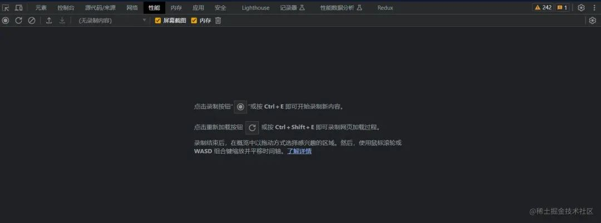
- 开始记录性能： 点击页面顶部的 "Record"（录制）按钮，开始记录性能数据。刷新页面或执行你想要分析的操作。
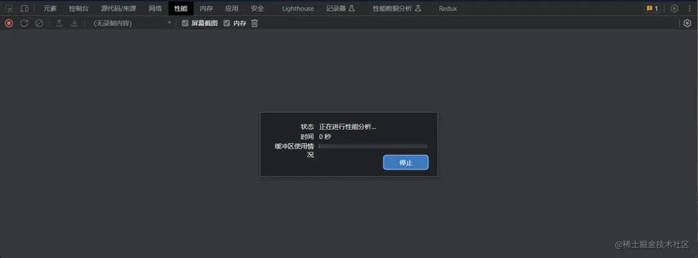
- 停止录制： 在你完成操作后，点击 "Stop"（停止）按钮，停止记录性能数据。此时，会看到一个包含了各种性能数据的时间轴图表。
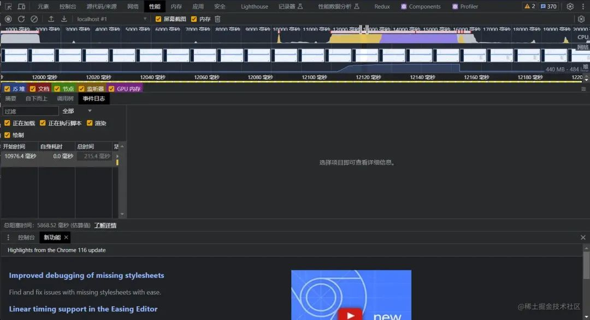
- 分析性能数据： 时间轴图表将显示页面加载期间的各种事件，如 JavaScript 执行、网络请求、绘制等。可以缩放和选择特定时间段来深入分析。
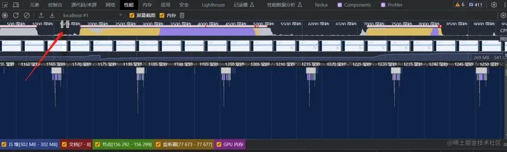
看上面这个截图，箭头是我点击按钮前的一个时间节点，方框是这瞬间的性能数据，所以看起来是比较正常的
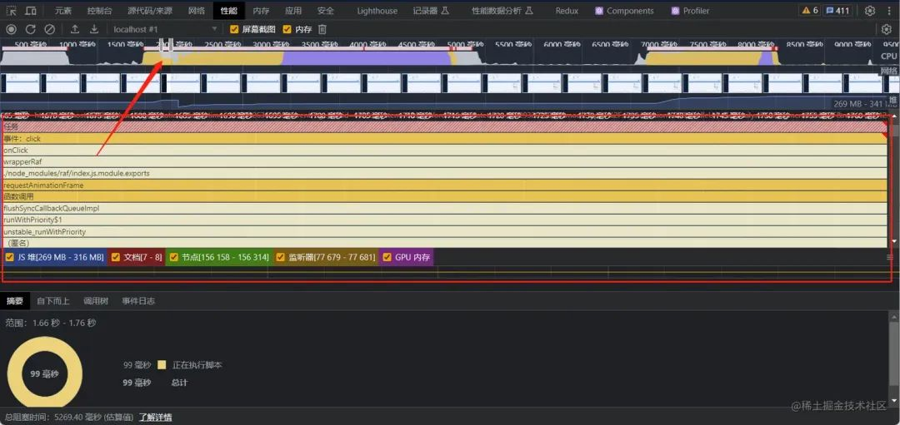
上图，再选择一个时间节点，这个是点击按钮后，但是 dom 没显示的时间节点，可以看下性能数据指标，不是红的就是黄的，可以和上面的截图做个对比，说明该地方出现性能问题了

从截图可以发现，从这个地方开始，性能就开始飙升了
其实这里就是我点击事件开始的时候，从开始的那个图看 点击 显示分组 ，就会出现一段时间的卡顿，这个节点就是卡顿开始的节点
- 查看详细信息： 在图表上点击不同的事件，你可以查看更详细的信息，如事件的时间、持续时间、事件类型等。

再看这一整段，是 1.45 秒到 4.95 秒的一段卡顿时间，再这段时间中，有 1498 毫秒在执行脚本，1932 毫秒在进行渲染， 所以可以大概猜出是数据量比较大的原因，计算需要执行脚本耗时，一次性渲染 dom 会进行渲染耗时
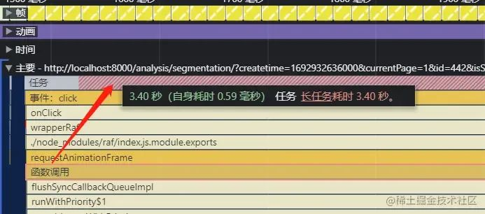
从这里来开始来定位问题，很明显这段任务执行了 3.4 秒。并且看第二行，主要的执行事件是 click 事件。
性能问题定位
根据图表和数据，可以定位性能问题。例如，长时间的 JavaScript 执行可能导致页面响应变慢，大量的网络请求可能影响加载速度等。
回流重绘问题
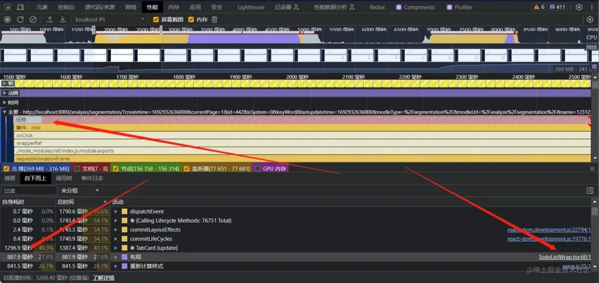
点击主要任务，找到用时消耗比较长的事件，这里先找个布局看一看，到对应源文件进行查看
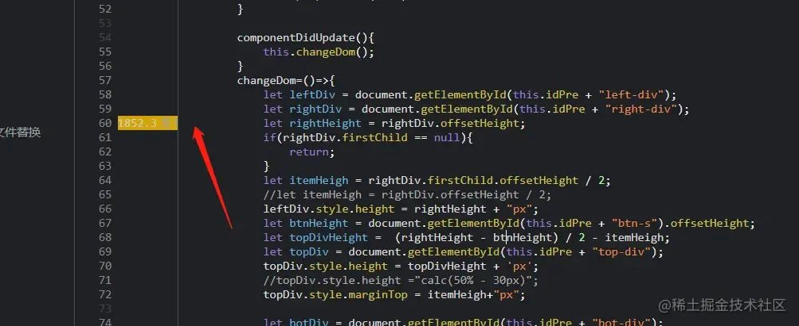
可以定位到布局性能消耗的主要代码在哪个地方，可以看出这里用到了一个 api，document.offertHeight，这里让我想到了一个八股文的面试题。
获取 offsetHeight 或其他类似属性（如 offsetWidth、clientHeight、scrollHeight 等）通常会触发浏览器的回流（reflow）和重绘（repaint）操作。
回流（Reflow）： 当你访问需要计算元素尺寸或位置的属性时，浏览器会强制重新计算页面布局，确保获取的属性值是最新的。这可能会涉及重新计算和调整其他元素的位置和大小，以适应获取的属性值。
重绘（Repaint）： 当浏览器重新计算页面布局后，如果没有影响元素的几何属性（比如位置和尺寸），但只是外观样式（比如颜色、背景等）发生了变化，浏览器就会执行重绘操作，重新绘制元素的外观。
因此，频繁地获取这些属性可能会导致性能问题，特别是在需要频繁更新元素样式或尺寸时。如果你需要多次访问这些属性，最好将获取的值缓存起来，避免多次触发回流和重绘。
在进行性能优化时，需要谨慎使用触发回流和重绘的操作，尽量减少对这些属性的频繁访问，或者采用一些优化技巧，如将多个样式更新合并为一次操作，使用 CSS 动画代替频繁的 JavaScript 更新等。
多次循环问题
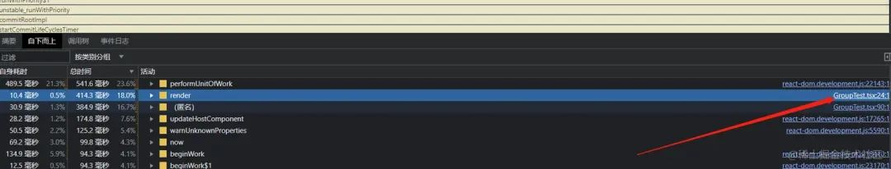
上图是定位源代码
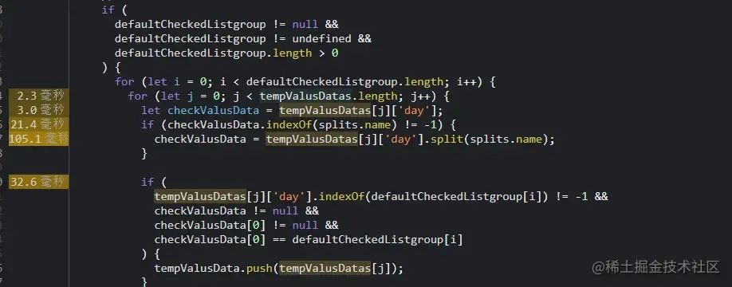
这段代码进行数据筛选，根据某些条件将特定的数据项添加到 tempValusData 数组中。这种操作可能会在数据量较大时导致性能问题，因为双重嵌套的循环会导致时间复杂度增加
大数组遍历
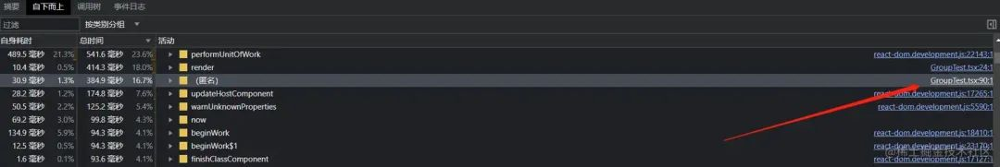
上图是定位源代码
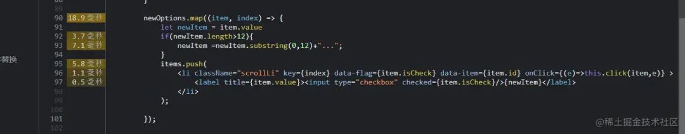
上述代码段涉及一个循环，对 newOptions 数组进行了遍历，然后根据数组中的每个元素构建了一组 <li> 元素，并在每个 <li> 元素内部创建了一个包含复选框和文本的标签。由于涉及到循环、DOM 操作和事件监听，可能会存在一些性能问题。
- 大数组遍历： 如果 newOptions 数组很大，遍历整个数组可能会导致性能下降。考虑是否可以进行分页、虚拟化或懒加载来避免同时渲染大量数据。
- DOM 操作： 在循环内部频繁地进行 DOM 操作会影响性能。建议将多个 DOM 操作合并成一个，或者使用 DocumentFragment 进行批量插入，以减少 DOM 操作次数。
后续我查看了这一部分代码，发现主要的问题就出现在这里，因为数据有几万条，所以在遍历和生成 dom 的情况下，会造成非常卡顿的问题
优化后的性能分析
优化前：3.40秒
优化后：231.84毫秒
Shell
Copy
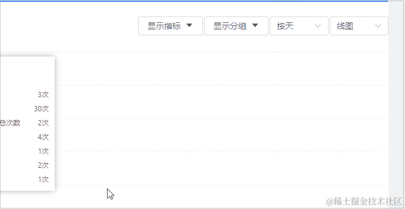
优化后效果，可以说是相当的高效，虽然只是一个大数据量的解决方案，但是大家可以参考这个方案去学习如何使用性能面板来分析性能瓶颈的存在，笔者本文只是给大家提供一个简单的例子，目前只提到了渲染和脚本执行两个性能方面的问题。
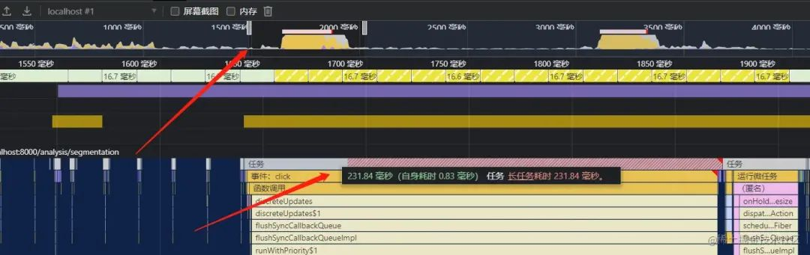
把找到的问题定位以后修改代码，尤其是把大数据的问题使用虚拟列表代替后，性能的提升可以说是质的飞跃，使用的虚拟列表是 antdesign 的组件 无限长列表。
list 无限长列表
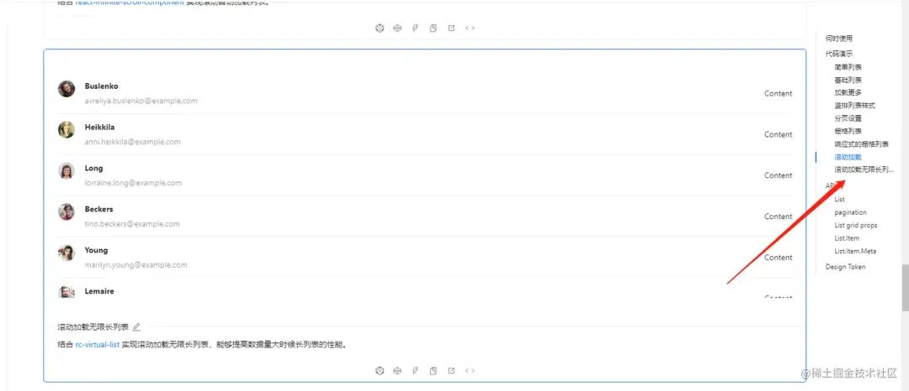
select 无限长列表
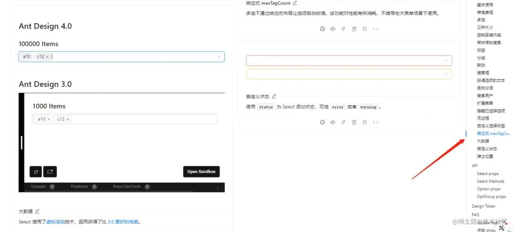
由于代码存在的时间可能比较长，所以之前的同事都是手写的列表组件，而且当时可能也没有这个虚拟列表组件库的实现，也没有考虑到大数据量的问题，其实 antdesign 有 select 组件的虚拟列表，但是由于之前存在封装的缘故，在比较了两个组件的实现方式，考虑到代码改动的大小方面，（因为一个页面写了三千多行代码），最终使用的是 list 的无限长列表。